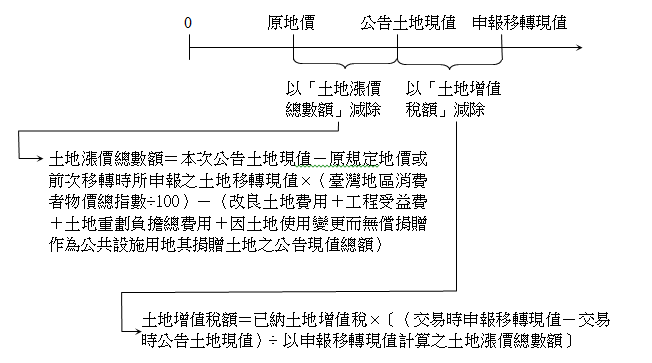
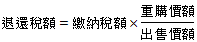

主題精選：房地合一所得稅¶
共收錄 18 篇文章。
1. 差別稅率¶
發布日期: 2025-10-02
內文¶
土地稅採差別稅率之目的，在達成其政策目的（如平均社會財富、實現地利共享、打擊炒房投機等）。茲分述如下：
• (一) 地價稅之差別稅率：地價稅針對申報地價總額（即地價稅之稅基）與累進起點地價之倍數大小的不同，採差別稅率，以抑制兼併、壟斷土地。
• (二) 土地增值稅之差別稅率：土地增值稅針對土地漲價總數額（即土地增值稅之稅基）與原地價（即原規定地價或前次申報移轉現值）之倍數大小的不同，採差別稅率，以實現地利共享，並減少投機誘因。
• (三) 房地合一所得稅之差別稅率：房地合一所得稅針對持有房地年數長短的不同，採差別稅率，以懲罰短期持有及打擊炒房投機。
• (四) 房屋稅之差別稅率：房屋稅針對持有房屋戶數的不同，採差別稅率，以制止囤房投機。
值得一提的是，地價稅及土地增值稅屬於累進稅，房地合一所得稅及房屋稅屬於比例稅。不論累進稅或比例稅，皆可採差別稅率，發揮租稅之政策效果。
注：本文圖片存放於 ./images/ 目錄下
2. 房地合一稅計算範例-受贈後出售¶
發布日期: 2025-03-11
內文¶
首先，可先參考財政部高雄國稅局新聞稿2025-02-24（個人出售屬房地合一所得稅新制之土地，非持有期間之土地漲價總數額不得減除-財政部全球資訊網）所提重點：個人出售適用房地合一所得稅新制之房屋、土地，其交易所得之計算，係以成交價額減除原始取得成本（受贈取得者，指受贈時之房屋評定現值及公告土地現值，按政府發布之消費者物價指數調整後之價值）、相關必要費用及土地漲價總數額後之餘額為課稅所得額。所稱土地漲價總數額，僅限於個人持有本次交易土地期間所產生的漲價總數額，尚不含贈與人（前所有權人）持有期間的土地漲價總數額，至其受贈時因取得該土地所繳納的土地增值稅，則屬個人因取得該土地而支付的費用，得自房地交易所得中減除。
本專欄擬計算案例如下：甲於107年9月受贈一筆市價1,000萬元之房地時，其當年公告土地現值總額為300萬元、房屋評定現值為200萬元，有支付契稅與印花稅5萬元，以及繳納土地增值稅20萬元，於118年11月出售之交易金額1,500萬元，並提出市地重劃負擔證明10萬元，且本次交易未提示取得、改良與移轉費用，依當期公告土地現值申報之土地漲價總數額為100萬元。試問甲如以自住房地提出申請，應繳納多少之房地合一所得稅？（消費者物價指數為150%）
計算：
• (一) 適用新舊制之判斷本題甲於107.9取得至118.11出售，依所得稅法規定交易之房屋、土地係於105年1月1日以後取得，應採用新制。
• (二) 所得餘額＝成交價額－受贈時之房屋評定現值及公告土地現值按政府發布之消費者物價指數調整後之價值－取得、改良及移轉而支付之費用－依土地稅法計算之土地漲價總數額＝(1,500－((300+200)×150%)－5－20－10－30－100) ＝585 (萬元) （因1,500×3%=45萬＞費用上限30萬，故以30萬計）
• (三) 稅率本題甲以自住房地提出申請，如符合所得稅法規定之自住條件，則其所得計算之餘額超過四百萬元部分，稅率為百分之十。
• (四) 應納所得稅額 (585-400)*10%＝18.5 (萬元)
注：本文圖片存放於 ./images/ 目錄下
3. 設籍（辦竣戶籍登記）之綜合整理¶
發布日期: 2024-08-01
內文¶
政府給予不動產租稅優惠，常規定須設有戶籍。一般而言，設籍分為下列二種不同規定：
• (一) 須有本人、配偶或直系親屬設籍（設籍條件較寬鬆）： 諸如：
-
地價稅之自用住宅用地優惠稅率（2‰）。
-
房屋稅之自住房屋（1%或1.2%）。
-
土地增值稅之一生一次優惠稅率（10%）。
-
土地增值稅之重購退稅。
• (二) 須有本人、配偶或未成年子女設籍（設籍條件較嚴格）： 諸如：
-
土地增值稅之一生一屋優惠稅率（10%）。
-
房地合一所得稅之自住房地免稅（400萬元以下部分，免稅）及優惠稅率（超過400萬元之部分，稅率10%）。
-
房地合一所得稅之重購退稅。
例如：甲擁有一棟自己居住使用之房屋，並由其已成年子女乙設籍。如單單考慮設籍因素，則持有時，得適用自用住宅用地之地價稅優惠及自住房屋之房屋稅優惠；移轉時，得適用自用住宅用地之土地增值稅一生一次優惠稅率及重購退稅；移轉時，不得適用自住房地之房地合一所得稅免稅、優惠稅率及重購退稅。
注：本文圖片存放於 ./images/ 目錄下
4. 房地合一所得稅之稅基疑義¶
發布日期: 2024-07-18
內文¶
計算房地合一所得稅之稅基時，扣除改良土地費用、工程受益費、土地重劃負擔總費用及土地使用變更而無償捐贈作為公共設施用地其捐贈土地之公告現值總額等四項，是否發生重複扣除？
【解答】
房地合一所得稅之稅基為「房地交易所得」。其公式如下： 房地交易所得＝成交價額－原始取得成本－支付費用－土地漲價總數額………①
依房地合一課徵所得稅申報作業要點第14點規定：「個人除得按前二點規定減除成本外，得再減除依土地稅法施行細則第五十一條規定經主管稽徵機關核准減除之改良土地已支付之下列費用：
• (一) 改良土地費用。 (二)工程受益費。 (三)土地重劃負擔總費用。 (四)因土地使用變更而無償捐贈作為公共設施用地其捐贈土地之公告現值總額。」準此，①式中之支付費用包括改良土地費用、工程受益費、土地重劃負擔總費用及因土地使用變更而無償捐贈作為公共設施用地其捐贈土地之公告現值總額等四項。
上開四項費用於計算「土地漲價總數額」時，已扣除一次；又於計算「房地交易所得」時，再扣除一次，是否發生重複扣除。茲分析如下： 土地漲價總數額＝申報土地移轉現值－原規定地價或前次移轉時所申報之土地移轉現值×（臺灣地區消費者物價總指數÷100）－（改良土地費用＋工程受益費＋土地重劃負擔總費用＋因土地使用變更而無償捐贈作為公共設施用地其捐贈土地之公告現值總額）………②
②式代入①式，得出： 房地交易所得＝成交價格－原始取得成本－支付費用 －〔申報土地移轉現值－原規定地價或前次移轉時所申報之土地移轉現值×（臺灣地區消費者物價總指數÷100）－（改良土地費用＋工程受益費＋土地重劃負擔總費用＋因土地使用變更而無償捐贈作為公共設施用地其捐贈土地之公告現值總額）〕………③
③式框起來之虛線，負負得正，等同這四種費用尚未扣除。因此，於計算「房地交易所得」時，再扣除一次，並未重複扣除。
注：本文圖片存放於 ./images/ 目錄下
5. 不動產移轉稅之課徵效果¶
發布日期: 2023-09-21
內文¶
不動產移轉稅主要是土地增值稅及房地合一所得稅。土地增值稅課徵之標的為土地，房地合一所得稅課徵之標的為土地及房屋。二者皆是不動產資本利得稅。
課徵不動產移轉稅之效果如下：
• (一) 租稅轉嫁效果：不動產移轉稅係針對出售不動產而獲利之一方（即賣方）課徵。然，當不動產景氣時，常呈現賣方市場。因此，賣方提高售價而將部分稅負轉嫁予買方。
• (二) 市場閉鎖效果：課徵土地增值稅及房地合一所得稅，使賣方獲利減少，而減少供給；又，使買方獲利減少，而減少需求，最後造成土地交易量減少（即市場閉鎖現象）。另，市場閉鎖會導致租稅閉鎖（即稅收減少）。
• (三) 抑制投機效果：土地增值稅及房地合一所得稅皆在課取房地所有人手中之不勞而獲，去除投機者之投機誘因，減少房地投機。¶
注：本文圖片存放於 ./images/ 目錄下
6. 同時免徵土地增值稅及房地合一所得稅之情形¶
發布日期: 2022-12-22
內文¶
• (一) 農業用地：
作農業使用之農業用地移轉與自然人時，得申請不課徵土地增值稅（雖名為不課徵，如無違規使用，等同免徵）（農業發展條例第37條第1項）。此等土地交易時，亦免徵房地合一所得稅（所得稅法第4條之5第1項第2款）。
• (二) 特殊建地：
農業用地變更為非農業用地，若已有主要計畫尚無細部計畫或雖有細部計畫但須整體開發使用（指市地重劃或區段徵收）而尚未辦理整體開發，無法作建築使用，仍作農業使用，得申請不課徵土地增值稅（農業發展條例第38條之1）。此等土地交易時，亦免徵房地合一所得稅（所得稅法第4條之5第1項第2款）。
• (三) 土地徵收：
被徵收之土地，免徵土地增值稅（土地稅法第39條第1項前段）。此等土地被徵收時，亦免徵房地合一所得稅（所得稅法第4條之5第1項第3款）。
• (四) 徵收前之協議價購：
依法得徵收之私有土地，土地所有權人自願售與需用土地人，免徵土地增值稅（土地稅法第39條第1項後段）。此等土地交易時，亦免徵房地合一所得稅（所得稅法第4條之5第1項第3款）。
• (五) 公共設施保留地：
依都市計畫法指定之公共設施保留地尚未被徵收前之移轉，免徵土地增值稅（土地稅法第39條第2項）。此等土地交易時，亦免徵房地合一所得稅（所得稅法第4條之5第1項第4款）。¶
注：本文圖片存放於 ./images/ 目錄下
7. 土地增值稅與房地合一所得稅之連結¶
發布日期: 2022-12-15
內文¶
• (一) 課徵對象 土地增值稅之課徵對象為土地的資本利得，房地合一所得稅之課徵對象為房地的資本利得。兩者課徵對象皆有土地，房地合一所得稅再擴及房屋。
• (二) 課徵時機 土地增值稅於移轉時課徵，房地合一所得稅於交易時課徵。兩者課徵主要時機皆為買賣。
• (三) 課稅基礎 土地增值稅之課稅基礎為土地漲價總數額，房地合一所得稅之課稅基礎為房地交易所得。兩者皆以本次賣價與前次買價之差額作為稅基。差在房地合一所得稅以實價認定，土地增值稅以申報移轉現值（參考公告土地現值申報）認定。
• (四) 稅率結構 土地增值稅之基本稅率為20%，累進稅率（即懲罰性稅率）為30%及40%，長期持有另有稅率減徵之優惠。以中華民國境內居住之個人為例，房地合一所得稅之基本稅率為20%，短期持有之懲罰性稅率為35%及45%，長期持有之優惠稅率為15%。總之，兩者之基本稅率皆為20%。
• (五) 自用住宅 土地增值稅對自用住宅用地（包括一生一次及一生一屋）之優惠稅率為10%。房地合一所得稅對自住房地，課稅所得於400萬元以下，免徵；課稅所得超過400萬元部分，稅率為10%。總之，兩者對自用住宅之優惠稅率皆為10%。
• (六) 重購退稅 土地增值稅對自用住宅用地、自營工廠用地及自耕農業用地適用重購退稅，並採差額退稅。房地合一所得稅對自住房地適用重購退稅，並採比例退稅。總之，兩者對自用住宅皆有重購退稅之優惠。¶
注：本文圖片存放於 ./images/ 目錄下
8. 農業用地如何課徵房地合一所得稅¶
發布日期: 2022-11-10
內文¶
• (一) 房地合一所得稅之課徵對象是否包括農業用地
房地合一所得稅之課徵對象為房屋、房屋及其坐落基地、依法得核發建造執照之土地等三種。據此，農業用地興建農舍，須申請建造執照，屬於依法得核發建造執照之土地，故為房地合一所得稅之課徵對象。但下列土地不得申請興建農舍，非屬房地合一所得稅之課徵對象。
-
非都市土地工業區或河川區。
-
前款以外其他使用分區之水利用地、生態保護用地、國土保安用地或林業用地
-
非都市土地森林區養殖用地。
-
其他違反土地使用管制規定者。（農業用地興建農舍辦法第5條第1項）
綜上，得興建農舍之農業用地為房地合一所得稅之課徵對象，不得興建農舍之農業用地非為房地合一所得稅之課徵對象。
• (二) 農業用地是否免徵房地合一所得稅
依所得稅法第4條之5第1項第2款規定，得申請不課徵土地增值稅之土地，免徵房地合一所得稅。析言之：
-
不課徵土地增值稅之農業用地免徵房地合一所得稅：作農業使用之農業用地移轉與自然人時，得申請不課徵土地增值稅（土地稅法第39條之2第1項）。因此，前揭農業用地買賣時，不課徵土地增值稅，亦免徵房地合一所得稅。惟應注意者，作農業使用之農業用地移轉與自然人時，因未申請而課徵土地增值稅，仍得免徵房地合一所得稅。
-
應課徵土地增值稅之農業用地須課徵房地合一所得稅：農業用地應課徵土地增值稅之情形如下：(1)作農業使用之農業用地移轉於法人，應課徵土地增值稅。但作農業使用之耕地依規定移轉與農民團體、農業企業機構及農業試驗研究機構時，其符合產業發展需要、一定規模或其他條件，經直轄市、縣（市）主管機關同意者，得申請不課徵土地增值稅（農業發展條例第37條第2項），是為例外。 (2)不課徵土地增值稅之土地承受人於其具有土地所有權之期間內，曾經有關機關查獲該土地未作農業使用且未在有關機關所令期限內恢復作農業使用，或雖在有關機關所令期限內已恢復作農業使用而再有未作農業使用情事時，於再移轉時應課徵土地增值稅（土地稅法第39條之2第1項）。
上開農業用地買賣時，應課徵土地增值稅，亦應課徵房地合一所得稅。¶
注：本文圖片存放於 ./images/ 目錄下
9. 重複課稅之處理¶
發布日期: 2022-06-02
內文¶
公共工程建設造成地價增漲，地價增漲造成所得提高。因此，工程受益費、土地增值稅、房地合一所得稅三者之課稅基礎密切相關。
工程受益費於工程開工後徵收，土地增值稅於辦理土地移轉登記前徵收，房地合一所得稅於辦竣房地移轉登記後徵收。換言之，先課徵工程受益費，再課徵土地增值稅，最後課徵房地合一所得稅。
現行採取下列處理方法，以避免重複課稅：
• (一) 工程受益費於土地漲價總數額減除。亦即：
土地漲價總數額＝申報土地移轉現值－原規定地價或前次移轉時所申報之土地移轉現值×（臺灣地區消費者物價總指數÷100）－（改良土地費用＋工程受益費＋土地重劃負擔總費用＋因土地使用變更而無償捐贈作為公共設施用地其捐贈土地之公告現值總額）
值得探討的是，工程受益費相當於準土地增值稅，卻在土地增值稅之稅基減除。換言之，工程受益費宜改為在土地增值稅之稅額減除才是。
• (二) 土地漲價總數額於房地交易所得減除。詳言之：
-
依公告土地現值計算之土地漲價總數額於房地交易所得減除。
-
超過公告土地現值部分所計算之土地增值稅於房地交易所得減除。
總之，土地增值稅之稅基（即土地漲價總數額）於房地合一所得稅之稅基（即房地交易所得）減除。惟為避免納稅義務人高報移轉現值，以適用較低土地增值稅率，逃避適用較高所得稅率。因此，就超過公告土地現值之申報移轉現值部分，不採土地增值稅之稅基，而採土地增值稅之稅額，於房地合一所得稅之稅基減除。如下圖所示。
[圖片1]
文章圖片¶

10. 退稅之請求權時效¶
發布日期: 2022-05-26
內文¶
• (一) 稅捐稽徵法之退稅：
因適用法令、認定事實、計算或其他原因之錯誤，致溢繳稅款者，納稅義務人得自繳納之日起十年內提出具體證明，申請退還；屆期未申請者，不得再行申請。但因可歸責於政府機關之錯誤，致溢繳稅款者，其退稅請求權自繳納之日起十五年間不行使而消滅（稽§28Ⅰ）。析言之：
-
可歸責於納稅義務人之錯誤：自繳納之日起十年間不行使而消滅。
-
可歸責於政府機關之錯誤：自繳納之日起十五年間不行使而消滅。
• (二) 土地增值稅之重購退稅：
土地所有權人出售其自用住宅用地、自營工廠用地或自耕之農業用地，另行購買使用性質相同之土地者，依法退還其出售土地所繳之土地增值稅（平§44Ⅰ）。
土地增值稅之重購退稅非屬適用法令、認定事實、計算或其他原因之錯誤，因此不適用稅捐稽徵法第28條有關退稅之規定。
土地增值稅之重購退稅，法無明定退稅請求權之時效，因此適用行政程序法第131條規定，即公法上請求權因十年間不行使而消滅。
• (三) 房地合一所得稅之重購退稅：
個人出售自住房屋、土地依規定繳納之稅額，自完成移轉登記之日或房屋使用權交易之日起算二年內，重購自住房屋、土地者，得於重購自住房屋、土地完成移轉登記或房屋使用權交易之次日起算五年內，申請按重購價額占出售價額之比率，自前開繳納稅額計算退還（所§14-8Ⅰ）。
房地合一所得稅之重購退稅非屬適用法令、認定事實、計算或其他原因之錯誤，因此不適用稅捐稽徵法第28條有關退稅之規定。
房地合一所得稅，法有明文規定退稅請求權之時效，即自重購房地完成移轉登記之次日起五年間不行而消滅。¶
注：本文圖片存放於 ./images/ 目錄下
11. 重購退稅之計算實例¶
發布日期: 2022-01-27
內文¶
甲出售一棟自住房地，出售價格1,500萬元，公告土地現值1,000萬元，土地增值稅200萬元，房地合一所得稅100萬元。半年後，甲再購入一棟自住房地，購入價格1,200萬元，公告土地現值900萬元。申報土地移轉現值以公告土地現值為準。試計算甲重購退稅之額度？
【解答】
• (一) 重購退還土地增值稅：1,000－200＝800900－800＝100重購退還土地增值稅100萬元。
• (二) 重購退還房地合一所得稅：[圖片1]重購退還房地合一所得稅80萬元。
文章圖片¶
12. 出售農地是否需要課徵房地合一所得稅？¶
發布日期: 2020-11-05
內文¶
根據所得稅法第4條之5規定，房屋、土地有下列情形之一者，免納所得稅：
• (一) 個人與其配偶及未成年子女符合下列各目規定之自住房屋、土地：
-
個人或其配偶、未成年子女辦竣戶籍登記、持有並居住於該房屋連續滿六年。(繼承或受遺贈取得者，得將被繼承人或遺贈人持有期間合併計算)
-
交易前六年內，無出租、供營業或執行業務使用。
-
個人與其配偶及未成年子女於交易前六年內未曾適用本款規定。
其免稅所得額，以按第十四條之四第三項規定計算之餘額不超過四百萬元為限，計算之餘額超過四百萬元部分，稅率為百分之十。
※立法目的：保障自住需求，落實居住正義，規定符合自住條件定額免稅、超額減徵。
• (二) 符合農業發展條例第三十七條及第三十八條之一規定得申請不課徵土地增值稅之土地。
※立法目的：為配合農業政策鼓勵農地作農業使用之減免規定，故移轉土地得申請不課徵土地增值稅須以「作農業使用」為要件。
• (三) 被徵收或被徵收前先行協議價購之土地及其土地改良物。
※立法目的：鼓勵民間配合政府基於政策目的推動之土地開發及徵收政策。
• (四) 尚未被徵收前移轉依都市計畫法指定之公共設施保留地。
※立法目的：衡平公共設施保留地之權益。
依據前列第二款規定，農地無論是否申請適用不課徵土地增值稅，均應先向公所申請「農業用地作農業使用證明書」或「符合農發條例第38條之1土地作農業使用證明書」後，以佐證農地移轉時確係供作農業使用，俾符合得申請不課徵土地增值稅而免徵房地合一稅。
因此，出售農地如符合農用要件，則免納房地合一所得稅；未符合農用要件者，仍應申報房地合一所得稅，如計算後有所得餘額，將予課徵。
參考資訊：財政部北區國稅局，2020-10-08，出售未作農業使用之農地，房地合一稅不能免¶
注：本文圖片存放於 ./images/ 目錄下
13. 實價登錄與申報課稅之勾稽¶
發布日期: 2020-07-30
內文¶
平均地權條例第47條第5項規定：「已登錄之不動產交易價格資訊，在相關配套措施完全建立並完成立法後，始得為課稅依據。」準此，實價登錄資料，得為課稅依據。現階段以作為申報所得稅之勾稽為主。茲分房地合一所得稅及個人綜合所得稅二方面說明：
• (一) 房地合一所得稅：買賣案件實價登錄之申報責任由買賣雙方負責，並於申請所有權移轉登記時一併辦理申報。買賣雙方對於登錄價格會發生相互牽制之作用。倘買方擬高報價格，以增加貸款金額，則會使賣方之房地合一所得稅增加。倘賣方擬低報價格，以逃漏稅捐，則會使買方未來出售時多繳房地合一所得稅。房地合一所得稅採實價課稅，個人應於房地完成所有權移轉登記日之次日起算三十日內自行填具申報書，檢附契約書影本及其他有關文件，向該管稽徵機關辦理申報（所得稅法§14-5）。個人未依規定申報或申報之成交價額較時價偏低而無正當理由者，稽徵機關得依時價或查得資料，核定其成交價格（所得稅法§14-6）。準此，稽徵機關對於個人所申報之成交價額，得採實價登錄資料加以勾稽，以符合時價。
• (二) 個人綜合所得稅：個人出租房地，應申報租賃所得，併入個人綜合所得，課徵所得稅。惟租賃案件透過不動產經紀業必須實價登錄，而屋主自己出租卻不必實價登錄，造成屋主選擇自己出租，低報租賃所得或甚至未申報，藉此逃漏所得稅。因此，現行租賃案件實價登錄存在漏洞，難以發揮全面勾稽作用。未來應修法改為租賃案件之申報責任回歸到租賃雙方，且不論透過不動產經紀業或由屋主自己出租皆要求實價登錄。
總之，實價登錄由買賣雙方於申請所有權移轉登記時共同向地政機關申報成交價額，房地合一所得稅由賣方於完成所有權移轉登記日之次日起算三十日內向稽徵機關申報成交價額。雖然兩者之申報時機及申報機關不同，惟兩者之申報成交價格應該一致。因此，兩者可以相互勾稽，以求申報價格之確實。¶
注：本文圖片存放於 ./images/ 目錄下
14. 房地合一所得稅自住減免與重購退稅之比較¶
發布日期: 2020-07-02
內文¶
試比較房地合一所得稅自住減免與重購退稅之條件有何不同？
【解答】
• (一) 戶籍條件不同：
-
自住減免：個人或其配偶、未成年子女設有戶籍並居住，連續滿六年。
-
重購退稅：個人或其配偶、直系親屬設有戶籍並居住，無設籍期間之限制。
• (二) 使用條件不同：
-
自住減免：交易前六年內，無出租、供營業或執行業務使用。
-
重購退稅：出售前一年內，無出租、供營業或執行業務使用。
• (三) 持有期限不同：
-
自住減免：持有且實際居住連續滿六年。
-
重購退稅：不論舊屋或新屋，無持有期間之限制；但出售舊屋與重購新屋移轉登記須在二年內。
• (四) 適用次數不同：
-
自住減免：交易前六年內未曾適用自住減免。換言之，每六年僅能適用一次。
-
重購退稅：無處數及次數之限制；但重購後五年內再行移轉或變更用途，追繳原退還稅款。
• (五) 申請期限不同：
-
自住減免：房地完成移轉登記日之次日起算三十日內申報。
-
重購退稅：重購房地完成移轉登記日之次日起算五年內申請。
綜上，自住減免之條件較重購退稅嚴格。另，自住減免與重購退稅可以並用。即先適用自住減免（即課稅所得在400萬元以下免税，超過400萬元適用10%稅率），再適用重購退稅（即重購價額大於或等於出售價額，退還全部稅款；重購價額小於出售價額，按比例退還稅款）。¶
注：本文圖片存放於 ./images/ 目錄下
15. 房地合一所得稅對繼承或贈與取得者不友善¶
發布日期: 2018-03-15
內文¶
若採繼承或贈與方式將不動產移轉於子女，遺產稅及贈與稅之核算，土地以公告土地現值為準，房屋以房屋評定現值為準，故具有節稅效果。然子女日後出售該房地時，房地合一所得稅之前次成本不以繼承或贈與前之原始取得成本，而以繼承或贈與時之公告土地現值及房屋評定現值，致房地合一所得稅增加。總之，就節稅觀點，採繼承或贈與方式將不動產移轉於子女，如單看遺產稅或贈與稅是有利的；但如加入房地合一所得稅綜合考量，就不見得有利。
例如：甲於105年2月15日買入一棟房地，買入價格1,000萬元。甲於106年2月15日贈於其子乙，贈與時之公告土地現值及房屋評定現值之合計為500萬元。乙於107年2月15日出售於第三人丙，出售價格1,200萬元（設物價指數為100%，且不考慮因取得、改良與移轉而支付之費用及土地漲價總數額）。就一般人的想法，本棟房地之交易所得為200萬元（即1,200－1,000＝200萬元）；但就房地合一所得稅之課徵規定，本棟房地之交易所得為700萬元（即1,200－500＝700萬元）。
唯獨例外的是，配偶相互贈與取得者，得以配偶第一次相互贈與前之原始取得成本為準。
另，房地合一所得稅之持有期間影響適用稅率高低。繼承或受遺贈者，得將被繼承人或遺贈人持有期間合併計算。唯獨贈與者，不得將贈與人持有期間合併計算。但配偶贈與者，得將配偶持有期間合併計算。¶
注：本文圖片存放於 ./images/ 目錄下
16. 土地增值稅重購退稅額度與房地合一所得稅重購退稅額度之比較¶
發布日期: 2017-11-30
內文¶
• (一) 土地增值稅之重購退稅額度如下：
-
新購土地地價＞(原出售土地地價—土地增值稅)：退還不足支付新購土地地價，但以已納土地增值稅為限。
-
新購土地地價≦(原出售土地地價—土地增值稅)：不得退稅。
• (二) 房地合一所得稅之重購退稅額度如下：
-
重購價額≧出售價額：退還全部稅額。
-
重購價額＜出售價額：按下列公式計算，退還部分稅額。[圖片1]
• (三) 比較：
-
土地增值稅重購退稅之適用對象包括自用住宅用地、自營工廠用地及自耕農業用地等三種。房地合一所得稅重購退稅之適用對象限於自住房地。
-
土地增值稅之重購退稅以土地價格計算，房地合一所得稅之重購退稅以房地價格計算。
-
土地增值稅重購退稅之計算，以該次移轉時之土地申報移轉現值為準。房地合一所得稅重購退稅之計算，以交易時之成交價格為準。
-
土地增值稅之重購價格過低，不得退稅。房地合一所得稅之重購價格不論高或低，皆可退稅。
-
土地增值稅按重購價格與原出售價格之「差額」予以退稅；但原出售價格須再扣除已繳之土地增值稅。房地合一所得稅按重購價額與原出售價額之「比率」予以退稅；但原出售價格不必再扣除已繳之房地合一所得稅。
文章圖片¶

17. 農舍及其坐落土地如何課稅？¶
發布日期: 2017-10-12
內文¶
農舍所坐落之土地為農業用地，因此就農業用地與農舍之課稅規定分別說明之。
• (一) 農業用地：
-
田賦或地價稅：作農業使用之農業用地課徵田賦，不徵地價稅。又，田賦自民國76年停徵迄今。
-
土地增值稅：作農業使用之農業用地，移轉給自然人，得申請不課徵土地增值稅。相對地，作農業使用之農業用地，移轉給法人，應課徵土地增值稅。
-
房地合一所得稅：符合不課徵土地徵值稅之農業用地，免徵房地合一所得稅。
-
贈與稅：作農業使用之農業用地贈與民法第1138條所定繼承人（即直系血親卑親屬、父母、兄弟姊妹及祖父母），免徵贈與稅。反之，作農業使用之農業用地贈與民法第1138條所定繼承人以外之人，應課徵贈與稅。順便一提的是，配偶互相贈與財產，免徵贈與稅。
-
遺產稅：作農業使用之農業用地繼承，免徵遺產稅。
• (二) 農舍：
-
房屋稅：農舍持有，每年應課徵房屋稅。但專供飼養禽畜之房舍、存放農機具倉庫之房屋等，免徵房屋稅。
-
契稅：農舍移轉，應課徵契稅。
-
房地合一所得稅：農舍交易，不徵房地合一所得稅。
-
贈與稅：農舍贈與，應課徵贈與稅。
-
遺產稅：農舍繼承，應課徵遺產稅。
總之，租稅優惠主要在農業用地，而非農舍。¶
注：本文圖片存放於 ./images/ 目錄下
18. 所有權住宅、地上權住宅及使用權住宅(二)¶
發布日期: 2017-05-25
內文¶
接續上篇...
茲以購屋者立場就所有權住宅、地上權住宅及使用權住宅三者比較如下：
• T. ABLE_PLACEHOLDER_1¶
注：本文圖片存放於 ./images/ 目錄下